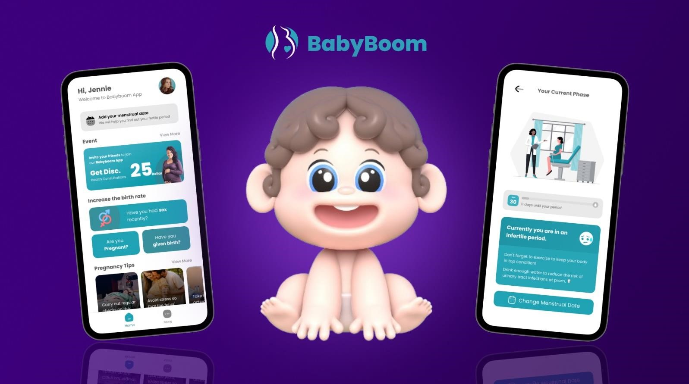

Whitepaper
Introduction: BabyBoomToken (BBT)
Fostering Genuine Mainstream Adoption for Web3
We are developing a Web3 service. This means our commitment to continuously provide the services our users need. To make this happen, we are connecting the community and online with blockchain.
Web3 is based on distributed web technologies rather than centralized servers and databases. This allows data and applications to be distributed across multiple nodes and eliminates the single point of failure (SPOF) problem of a central server.
Web3 uses blockchain and smart contract technology to implement reliable data and transaction processing. Blockchain provides a distributed ledger and ensures transparency and integrity of transactions.
The future of community is decentralized. It is the most reliable and wisest way to create value for everyone. In the realm of decentralized technologies, BabyBoomToken (BBT) stands out with a clear mission: to drive true mass adoption of Web3. The focus is not only on meeting user needs, but also on driving sustained usage and real demand. BabyBoomToken (BBT) is committed to understanding user preferences and making its ecosystem an integral part of their daily lives.
BabyBoomToken (BBT) links SELLON, a hyperlocal community app, and BabyBoom, a birth promotion app. It is designed to allow users to earn BabyBoomTokens (BBT) as rewards for their activity on these apps. Through these apps and various upcoming DApps, the BabyBoomToken (BBT) ecosystem has as its core goal the effective integration of online and offline experiences through web3 services.
Official Link
Download Sellon App
Link : Sellon
Download Babyboom App
Link : Babyboom
Official Website
Link : Babyboomtoken
Official Social Media Link
Telegram Community Chat: https://t.me/babyboomtokencommunitychat
Telegram announcement: https://t.me/babyboomtoken
X (Twitter): https://twitter.com/BabyBoomToken
Instagram: https://www.instagram.com/babyboomtoken01
Thread: https://www.threads.net/@babyboomtoken01
Discord: https://discord.com/invite/rPxraN4y
Linkedin: https://www.linkedin.com/company/baby-boom-token/
Facebook: https://www.facebook.com/BabyBoomToken/
SELLON: Hyperlocal Community App
SELLON provides a variety of functions such as region-based secondhand goods trading, local bulletin boards, clubs, and casual games, providing users with a variety of experiences in one place. This allows you to enjoy a variety of things to do along with activities in your local community. SELLON contributes to revitalizing local communities by providing convenient and diverse services to users.
This vision is connected to BabyBoomToken (BBT), integrating BabyBoomToken (BBT)'s Web3 reward system to solve the problem that SELLON provides convenience to current users, but may not attract new users due to lack of rewards for participation. I'm doing it. This allows users to contribute to forming a new economic ecosystem in their local community while receiving rewards for their activities. SellOn and BabyBoomToken (BBT) are forming an integrated service that provides users with a unique and beneficial experience while contributing to the local economy.
Connecting hyperlocal to onchain
BabyBoomToken (BBT) is a key element of the strategic plan to foster a dynamic community ecosystem, integrating a Web3-based reward system into the existing Web2 hyperlocal community app, SELLON. In order to continuously attract new users and encourage participation, we have actively introduced BabyBoomToken (BBT)'s unique and innovative Web3 reward system.
BabyBoomToken is given to users as a reward for various activities on the SELLON App. As an incentive for users to engage in activities such as sharing content or inviting new users, users will earn “SPT”, SELLON’s proprietary reward system, which can be exchanged for BabyBoomToken(BBT).
Through this mechanism, BabyBoomToken encourages users to actively utilize and participate in the SELLON App, while also realizing the true meaning of Web3. This is part of the innovative and valuable ecosystem that BabyBoomToken(BBT) is creating.
Key Features
- Community
- Club
- Buy & Sell
- Games
The community feature of SELLON serves as a platform where users can freely post various types of content such as text, short-form videos, and images. Through comments and chat functions, seamless communication is supported between content creators and participants. Not only do users share individual interests, but they also easily exchange information about local events, incidents, and inquiries, fostering increased interaction within the community.
Users can receive 'SPT' as a reward by posting content or participating in posts created by other users.
The Club feature allows users with common hobbies, interests, or affiliations to form small groups. Joining clubs aligned with their specific interests enables users to communicate and share information, enhancing diversity within the local community and encouraging collaboration.
SELLON offers a feature for buying and selling secondhand goods, allowing users to share or sell items they no longer need for free or at a low cost. This hyperlocal service facilitates direct in-person transactions, resolving issues related to delivery and trust. It promotes secure and efficient transactions among local residents, contributing to the development of the local economy.
The social gaming feature offers simple and enjoyable games such as rock-paper-scissors, airplane shooting, and block matching. This not only brings amusement to users but also provides a competitive aspect through scores, encouraging interaction and enhancing the vitality of the local community. Social gaming contributes to increased user engagement and community activity.

Users receive 'SPT' rewards proportional to their game scores. After exhausting the free game sessions, they can purchase additional game tickets using SPT to continue playing.
BabyBoom: App for Encouraging Childbirth
BabyBoom is an innovative platform designed for couples planning to conceive and successfully navigate the journey of pregnancy. This app rewards users with tokens for their intimate relations, and as the pregnancy progresses, it offers an escalating reward system. Furthermore, achieving childbirth unlocks even greater rewards.
BabyBoom actively encourages and incentivizes the processes of conception, pregnancy, and ultimately, childbirth. It serves as a platform that positively motivates users in the formation of new families. With sophisticated design and robust security measures, BabyBoom provides users with a safe and convenient experience, facilitating a joyful start to their family life. Incorporating advanced technology and ethical values, BabyBoom is a tool that revolutionizes modern family planning and pregnancy experiences, offering users a unique and trustworthy service.
Creative and innovative birth incentives
BabyBoom will be a very interesting and creative fertility promotion program for users in many countries that are already facing a huge social problem: low birth rates. The step-by-step journey from relationship to pregnancy between a man and a woman to childbirth rewards them with gradually increasing points called "SPT", which can eventually be exchanged for BabyBoomTokens(BBT). BabyBoom is an innovative companion for couples waiting for a new family and will provide users with a pleasant experience, making the journey of pregnancy and childbirth even more special.
Key Features
- Pregnancy Incentive Rewards
- Childbirth Event Rewards
- Community for Moms
BabyBoom actively encourages healthy pregnancy for both men and women. By introducing a Web3 reward system for relationship building and post-pregnancy participation, we offer users a unique experience.
Having a relationship for pregnancy and verifying it in the app earns you 'SPT' as a reward.
By accompanying users on the journey from pregnancy to childbirth and participating in childbirth events, they can receive even greater rewards. This allows for commemorating precious family moments and progressing toward special experiences as rewards.
Giving birth and verifying it will reward you with SPT.
BabyBoom provides a special community for users growing together. Through various themed groups and events, users can share knowledge and communicate.
Tokenomics
SPT is a point given as a reward for user activity in the SELLON app and BabyBoom app and is issued in unlimited quantities. This SPT becomes the basis for exchange with BabayBoomToken(BBT) and is provided according to the user's activities in accordance with the platform operator's fair policy.
- Total Supply: 1,000,000,000
- Platform/Type: BNB
BabyBoomToken is a blockchain token based on the Binance platform, and its issuance and distribution volume strictly complies with the content specified in the white paper.
- Token Distribution Wallet and Quantity Status
- Lock-up Release Plan and Method

dApp Ecosystem Flow
BabyBoomTokens(BBT) can be earned through activities on the SELLON app and BabyBoom app. Users earn SPT as a reward for their activities, and this SPT is exchanged for BabyBoomToken(BBT). The exchange ratio is not fixed at 1:1, but is dynamically adjusted according to the issuance and circulation of the SPT.
- User Integration:
- Users engage with the SELLON app and BabyBoom app through various activities like content creation, participation in clubs, playing games, and encouraging childbirth-related activities.
- SPT Generation:
- Users are rewarded with SPT for their activities within the apps.
- SPT is generated based on specific criteria such as content creation, club participation, game scores, and childbirth-related activities.
- SPT to BBT Conversion:
- Users have the option to convert their accumulated SPT into BabyBoomToken (BBT) based on a conversion ratio.
- The conversion ratio may vary depending on factors like SPT issuance and circulation.
- Wallet Integration:
- Users' digital wallets are integrated into the apps to securely manage and store their earned SPT and BBT.
- dApp Integration:
- Seamless integration with decentralized applications (dApps) within the Web3 ecosystem.
- Both SELLON and BabyBoom apps are connected to the broader blockchain network, allowing users to interact with other decentralized services.
- Blockchain Confirmation:
- Transactions and interactions are recorded on the blockchain, ensuring transparency, security, and integrity.
- Rewards Redemption:
- Users can redeem their earned BBT for various rewards within the dApp ecosystem, including tangible goods, services, or exclusive in-app features.
- Community Engagement:
- Users participate in the vibrant community facilitated by the apps, sharing experiences, feedback, and contributing to the overall growth of the ecosystem.
- Continuous Development:
- The dApp ecosystem undergoes continuous development, with regular updates, new features, and improvements based on user feedback and emerging technologies.
This ecosystem appears to be designed to drive user engagement and encourage token usage within the platform. These mechanisms promote the activation of the platform and the circulation of tokens, and can ultimately contribute to increasing the value of the platform.
Service Roadmap
- Planning Phase (2023 Q3):
- Brainstorming, initial planning, market research, and competitive analysis.
- dApp Development (2023 Q4):
- Developing the Babyboom app and strengthening the SPT points system for BBT exchange.
- Official BBT Launch (2024 Q1):
- BBT is officially issued and can be earned and exchanged for products in the dApps Sellon and Babyboom.
- Marketing Strategy and Social Media Outreach (2024 Q2):
- Awareness of BBT is being raised among blockchain investors through PR news and KOL marketing, while followers are being gathered on social media channels such as Telegram, X, and Discord.
- Major Exchange Listings (2024 Q3):
- List BabyBoomToken (BBT) on major CEXs including HTX, Bybit, OKX, Kucoin, Gate.io, and Bitget, as we believe we have met all listing conditions.
- Expanding Utility (2024 Q4):
- Expand the utility of BabyBoomToken (BBT) by integrating it with more everyday services and retailers. Introduce additional rewards and incentives for community participation. Develop and launch Clublink, a dApp that connects people globally with shared hobbies and interests, where BBT will be rewarded for user activities.
- App Enhancement (2025 Q1):
- Enhance the Babyboom app with new features, including advanced pregnancy and parenting tracking tools. Increase collaborations with healthcare providers and parenting organizations.
- Global Marketing Campaign (2025 Q2):
- Launch a global marketing campaign to attract more users and grow our community further. Introduce localized content and support for different regions.
- Ongoing Development:
- Continuously improve user experience and engagement through regular updates and community feedback.